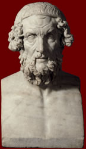

Homer
8th century BC

Homer composed two of the most important works of Greek literature, the Odyssey and the Iliad. However, not very much is known about his life. Many people believe that he was a blind bard.
The Iliad tells the story of the climax of a war between the Greeks and the city of Troy. The Odyssey describes the adventures of the Greek hero Odysseus on his way home from the Trojan War.
These stories are still enjoyed today. In 2004, the film Troy was released based on Homer's story.
|